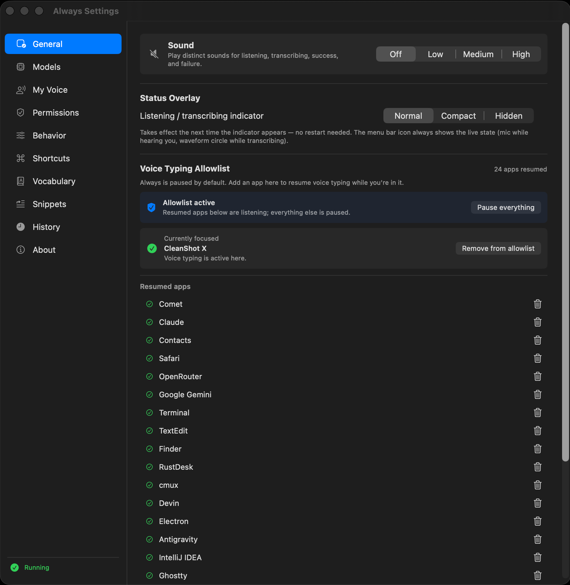

Always is dictation without the push-to-talk. The microphone stays live, your voice becomes text, and the text lands wherever your cursor already is — a terminal, an editor, a chat with your AI.
Open source · AGPL-3.0 · macOS, Linux, Windows · No account
into GhosttyListening
↵ sent
A looping demonstration. Each sentence is spoken, typed at the cursor of a named app, and sent automatically.
Every other dictation app asks for a gesture first.
Push-to-talk
hold a key
speak
release
wait
check it
↵
Always
speak
The gesture costs more than a second. It costs the thought you were holding — the half-formed sentence you were about to say to your terminal, your teammate, your model.
Always removes the gesture. Speaking is the only step. Text is typed and sent for you; hold ⌘ while you talk and the words land without sending.
Your words land where you’re already looking.
No window to open, nothing to copy across. Xcode, Slack, Notion, Terminal, the browser — if it has a cursor, Always can type into it.
Ghostty
› claude, move the session store off the audio thread
Claude
Explain why this test only fails on Linux.
IntelliJ IDEA
// debounce the overlay so it stops flickering
Slack
Pushed the fix — can you try it on your machine before lunch?

You choose where it listens. The allowlist keeps Always paused everywhere except the apps you resume — your terminal and editor, not your banking tab.
It only hears you.
Record three short samples and Always builds a voiceprint. Once enrolled, it ignores everyone else — the colleague, the TV, the podcast, the Zoom call — even with media playing at full volume. The voiceprint never leaves your machine.
Youship the migration after the standup
Colleaguedid anyone order lunch
YouTubesmash that subscribe button
Zoom callcan everyone see my screen
Podcastthis episode is brought to you by
At your cursor
Speech models hallucinate in the quiet.
Give a speech model a few seconds of silence and it fills the gap with lines it read a million times in subtitles. Always catches them before they reach your cursor.
Installs the DEB, or falls back to the AppImage. Ubuntu 22.04+, Debian 12+, Fedora 38+ with PipeWire, PulseAudio or ALSA. Setup notes in SETUP.md.
Download the MSI installer from GitHub Releases and run it as Administrator, then allow microphone access in Settings → Privacy → Microphone. Windows 10 1909+ or Windows 11.
git clone https://github.com/LivioGama/always && cd always && cargo build --release
Rust toolchain required. Build, test and contribution notes in DEVELOPMENT.md.